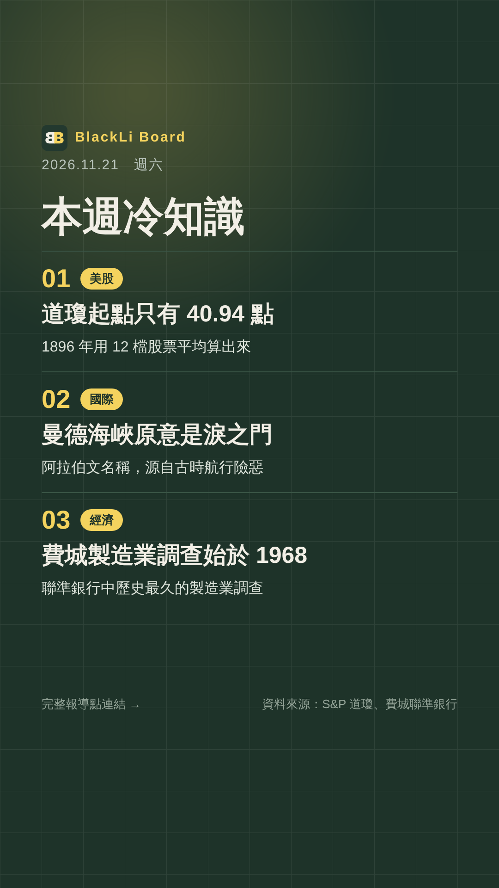

一張圖看懂這週

1. 道瓊指數一開始只有 40.94 點？
這週道瓊一連幾天下跌好幾百點。這個指數的起點其實很小：1896 年 5 月 26 日，查爾斯・道（Charles Dow）把 12 家工業公司的股價加起來除以 12，得到 40.94，這就是第一個道瓊工業平均指數。1916 年擴大到 20 檔，1928 年才變成現在的 30 檔。最早的 12 家裡撐最久的是奇異（GE），也在 2018 年被移出。
2. 「費城製造業指數」是誰在問、問了多久？
這週新聞說費城製造業指數驟降。它是費城聯邦準備銀行做的「製造業景氣展望調查」，1968 年 5 月開始，當年是費城聯準銀行研究部和賓州貝爾電話公司一起合作推出，是各地區聯準銀行裡歷史最久的製造業調查。它每月問賓州東部、紐澤西南部和德拉瓦州的製造業主管：生意比上個月變好還是變差？因為每月很早公布，常被當成美國製造業的「早期預告」。
3. 曼德海峽的名字是什麼意思？
這週葉門局勢讓「曼德海峽」又上新聞。它的阿拉伯文名稱 Bab el-Mandeb，大英百科全書譯為「淚之門」，也有人譯成「哀傷之門」，由來是古時候在這裡航行很危險。海峽位在阿拉伯半島和非洲之間，連接紅海和亞丁灣，寬約 32 公里，中間被丕林島（Perim）分成兩條水道。從歐洲經蘇伊士運河往亞洲的船，都要從這道「門」通過。
4. 國際法院為什麼不在紐約？
這週國際法院（ICJ）的判決受到關注。它是聯合國六個主要機關中，唯一不在紐約的，總部在荷蘭海牙的「和平宮」。和平宮是美國鋼鐵大亨卡內基捐款 150 萬美元蓋的，1913 年 8 月 28 日啟用，比聯合國成立還早 30 多年。國際法院有 15 位法官，由聯合國大會和安理會分別投票選出，任期 9 年，每 3 年改選三分之一，同一國籍最多 1 人。
5. 聯準會的「會議紀錄」為什麼晚三週才出來？
這週公布的聯準會會議紀錄，其實是上一次利率會議的內容。聯準會的貨幣政策委員會（FOMC）一年固定開 8 次會，大約每 6 週一次，需要時也會臨時開會。會後當天先發聲明，詳細的討論摘要「會議紀錄」則依聯準會說明，通常在決策日後三週公布。所以市場常把它當成「事後補看」：從紀錄裡找官員們對下一步的看法。
道瓊從 40.94 點出發，走了 130 年。如果要你替自己的生活編一個「指數」，你會挑哪幾樣東西放進去？
資料來源：S&P 道瓊指數：道瓊工業平均指數 130 週年、CNBC：道瓊歷史里程碑、費城聯邦準備銀行：製造業調查五件事、大英百科全書：曼德海峽、國家地理：曼德海峽、國際法院：法院成員、卡內基基金會：和平宮、美國聯準會：關於 FOMC、美國聯準會：會議紀錄問答